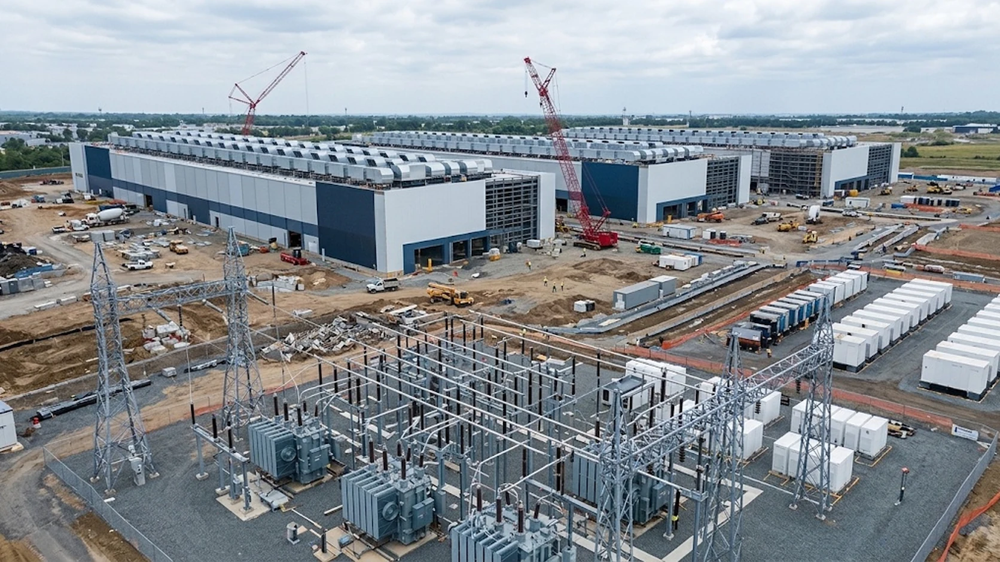

Federal Reserve: AI Becomes Top Financial Stability Risk as Data-Center Debt Rises
The Federal Reserve’s November report identifies artificial intelligence as the most frequently cited financial stability risk among market contacts, while documenting a rapid expansion in borrowing and contractual obligations tied to advanced-computing infrastructure.

The artificial intelligence investment boom has become a financial stability concern as well as a major source of corporate spending. In its November 2026 Financial Stability Report, the Federal Reserve highlighted growing exposure to AI-related risks, particularly the financing of data centers and advanced computing infrastructure.
The shift is significant because the expansion of AI capacity is increasingly supported by a combination of corporate borrowing, private credit, project financing and long-term contractual commitments. If demand for AI services or the revenue generated by those services falls short of expectations, the financial consequences could extend beyond technology companies.
According to the report’s survey of market contacts, AI-related risks were the most frequently cited concern for the U.S. financial system. Reuters reported that 87% of respondents identified AI-related risks, compared with 50% in the previous survey in May. The concerns included elevated valuations, debt-financed investment and the possibility that weaker-than-expected returns could trigger a broader repricing of financial assets.
Data-center financing moves into focus
The scale of investment helps explain why regulators are paying closer attention. Data centers require substantial spending on land, buildings, power infrastructure, cooling systems, networking equipment and advanced semiconductors. Much of that capacity must be financed before the facilities generate revenue.
Reuters reported that borrowing tied to data centers and advanced computing infrastructure had reached approximately $680 billion by October 2026. That figure illustrates how quickly financing needs have expanded as technology companies, infrastructure operators and investors compete to build capacity.
These structures can distribute exposure across several entities. A data-center operator may borrow to construct a facility, lease equipment from another company and sign long-term capacity agreements with a cloud provider. The financial obligations are connected, even when they appear on different balance sheets.
The Federal Reserve’s concern is therefore not limited to the amount of conventional corporate debt. Guarantees, leases and other contractual commitments can create significant future payment obligations. Reuters reported that debt and related commitments associated with advanced computing infrastructure could exceed $3 trillion when these broader obligations are considered.
Those categories should not be treated as interchangeable. Borrowed money, lease payments and guarantees represent different forms of exposure and do not all function like conventional debt. Their combined scale nevertheless indicates how much capital is being committed to the AI infrastructure cycle.
The risk of a mismatch between spending and revenue
Technology companies are investing in computing capacity in anticipation of sustained demand from businesses, consumers and developers. That demand may continue to expand, but the timing and profitability of adoption remain uncertain. Companies can spend heavily on chips and data centers before their customers generate enough recurring revenue to support the investment.
A slowdown would not necessarily mean that AI adoption had stopped. Even a period of slower growth could create pressure if companies had borrowed against expectations of rapid expansion. Operators with high fixed costs and long-term lease commitments could find it difficult to reduce expenses quickly.
The exposure may also reach investors that do not directly own technology stocks. Banks, private credit funds, bondholders, infrastructure investors and equipment financiers can all be connected to the same projects. A deterioration in the financial position of one borrower could therefore affect several counterparties.
The risks are particularly relevant where financing depends on optimistic assumptions about future utilization rates, electricity availability and the resale value of specialized equipment. If facilities are completed faster than demand develops, operators could face lower occupancy and weaker cash flow.
Market valuations could amplify the impact
The Federal Reserve’s warning also connects AI financing to broader asset-market conditions. Investors have assigned substantial value to companies expected to benefit from AI adoption. If earnings growth disappoints, a reassessment of those expectations could affect share prices, corporate borrowing costs and investment plans.
A decline in technology valuations would not automatically create a systemic crisis. The potential concern is the interaction between expensive assets, rising leverage and interconnected financing arrangements. Falling valuations could make it harder for some companies to raise capital or refinance existing obligations at acceptable rates.
For related coverage of the infrastructure investment cycle, see the analysis of CoreWeave’s quarterly results and AI spending and the report on electricity demand from AI data centers.
A warning about concentration, not a prediction of collapse
The Federal Reserve’s assessment does not amount to a prediction that AI investment will fail or that data-center financing will trigger an immediate financial crisis. It identifies vulnerabilities that could become more important if market conditions deteriorate.
The distinction matters. AI infrastructure may support a lasting increase in productivity and computing demand, but the financial system still has to manage the risks created by the speed, scale and structure of the investment cycle.
For lenders and investors, the key indicators will include the ability of operators to generate cash flow, the cost of refinancing, the utilization of new facilities and the extent to which obligations are concentrated among a small group of borrowers and counterparties.
The November report places AI at the center of the Federal Reserve’s near-term risk assessment. The message is not that the technology’s economic potential is in doubt, but that the financing behind its expansion has become large enough to matter for the stability of the wider financial system.
Sources
- Federal Reserve, Financial Stability Report, November 2026
- Reuters, AI rockets to top of worries about financial system in latest Fed survey, November 13, 2026